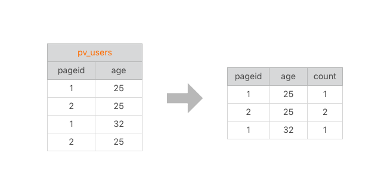
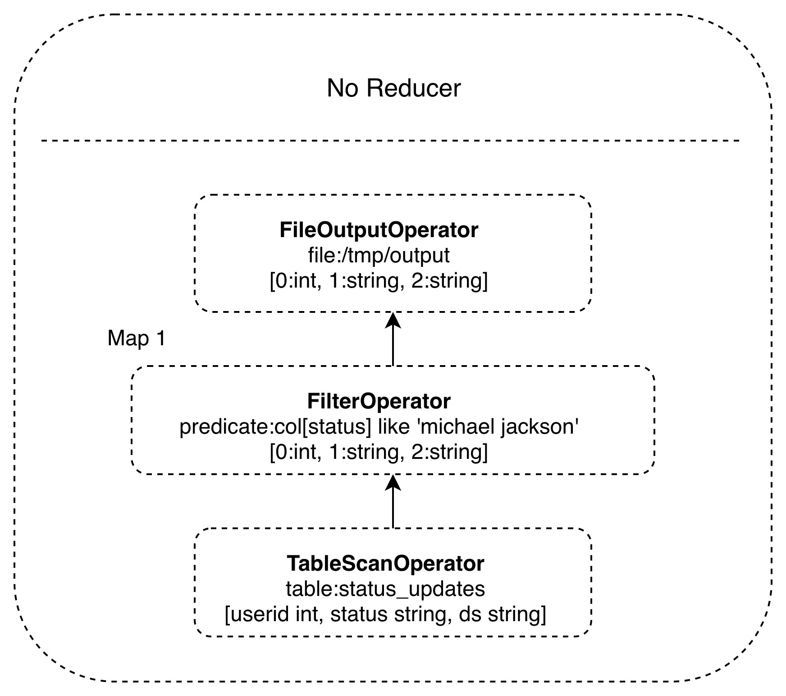

11 | Hive是如何让MapReduce实现SQL操作的
前面我们讲过，MapReduce 的出现大大简化了大数据编程的难度，使得大数据计算不再是高不可攀的技术圣殿，普通工程师也能使用 MapReduce 开发大数据程序。但是对于经常需要进行大数据计算的人，比如从事研究商业智能（BI）的数据分析师来说，他们通常使用 SQL 进行大数据分析和统计，MapReduce 编程还是有一定的门槛。而且如果每次统计和分析都开发相应的 MapReduce 程序，成本也确实太高了。那么有没有更简单的办法，可以直接将 SQL 运行在大数据平台上呢？
在给出答案前，我们先看看如何用 MapReduce 实现 SQL 数据分析。
坚持学习到这里的同学一定还记得，我在专栏第 7 期留了一道思考题，对于常见的一条 SQL 分析语句，MapReduce 如何编程实现？
SELECT pageid, age, count(1) FROM pv_users GROUP BY pageid, age;
错过这期内容的同学可以先返回第 7 期文章思考一下这个问题，思考之余也可以看看其他同学给出的方案，我看留言很多同学的思路都是正确的，我们来详细看看 MapReduce 实现 SQL 的原理。
这是一条非常常见的 SQL 统计分析语句，统计不同年龄的用户访问不同网页的兴趣偏好，对于产品运营和设计很有价值。具体数据输入和执行结果请看下面的图示。

左边是要分析的数据表，右边是分析结果。实际上把左边表相同的行进行累计求和，就得到右边的表了，看起来跟 WordCount 的计算很相似。确实也是这样，我们看下这条 SQL 语句的 MapReduce 的计算过程，按照 MapReduce 编程模型，map 和 reduce 函数的输入输出以及函数处理过程分别是什么。
首先，看下 map 函数的输入 Key 和 Value，我们主要看 Value。Value 就是左边表中每一行的数据，比如 <1, 25> 这样。map 函数的输出就是以输入的 Value 作为 Key，Value 统一设为 1，比如 <<1, 25>, 1> 这样。
map 函数的输出经过 shuffle 以后，相同的 Key 及其对应的 Value 被放在一起组成一个 <Key, Value 集合 >，作为输入交给 reduce 函数处理。比如 <<2, 25>, 1> 被 map 函数输出两次，那么到了 reduce 这里，就变成输入 <<2, 25>, <1, 1>>，这里的 Key 是 <2, 25>，Value 集合是 <1, 1>。
在 reduce 函数内部，Value 集合里所有的数字被相加，然后输出。所以 reduce 的输出就是 <<2, 25>, 2>。
讲起来有点拗口，我把这个过程画成了一张图，看起来就清楚多了。
这样一条很有实用价值的 SQL 就被很简单的 MapReduce 计算过程处理好了。
在数据仓库中，SQL 是最常用的分析工具，既然一条 SQL 可以通过 MapReduce 程序实现，那么有没有工具能够自动将 SQL 生成 MapReduce 代码呢？这样数据分析师只要输入 SQL，就可以自动生成 MapReduce 可执行的代码，然后提交 Hadoop 执行，也就完美解决了我们最开始提出的问题。问题的答案，也就是这个神奇的工具就是 Hadoop 大数据仓库 Hive。
Hive 能够直接处理我们输入的 SQL 语句（Hive 的 SQL 语法和数据库标准 SQL 略有不同），调用 MapReduce 计算框架完成数据分析操作。下面是它的架构图，我们结合架构图来看看 Hive 是如何实现将 SQL 生成 MapReduce 可执行代码的。

我们通过 Hive 的 Client（Hive 的命令行工具，JDBC 等）向 Hive 提交 SQL 命令。如果是创建数据表的 DDL（数据定义语言），Hive 就会通过执行引擎 Driver 将数据表的信息记录在 Metastore 元数据组件中，这个组件通常用一个关系数据库实现，记录表名、字段名、字段类型、关联 HDFS 文件路径等这些数据库的 Meta 信息（元信息）。
如果我们提交的是查询分析数据的 DQL（数据查询语句），Driver 就会将该语句提交给自己的编译器 Compiler 进行语法分析、语法解析、语法优化等一系列操作，最后生成一个 MapReduce 执行计划。然后根据执行计划生成一个 MapReduce 的作业，提交给 Hadoop MapReduce 计算框架处理。
对于一个较简单的 SQL 命令，比如：
SELECT * FROM status_updates WHERE status LIKE ‘michael jackson’;
它对应的 Hive 执行计划如下图。

Hive 内部预置了很多函数，Hive 的执行计划就是根据 SQL 语句生成这些函数的 DAG（有向无环图），然后封装进 MapReduce 的 map 和 reduce 函数中。这个例子中，map 函数调用了三个 Hive 内置函数 TableScanOperator、FilterOperator、FileOutputOperator，就完成了 map 计算，而且无需 reduce 函数。
除了上面这些简单的聚合（group by）、过滤（where）操作，Hive 还能执行连接（join on）操作。文章开头的例子中，pv_users 表的数据在实际中是无法直接得到的，因为 pageid 数据来自用户访问日志，每个用户进行一次页面浏览，就会生成一条访问记录，保存在 page_view 表中。而 age 年龄信息则记录在用户表 user 中。

这两张表都有一个相同的字段 userid，根据这个字段可以将两张表连接起来，生成前面例子的 pv_users 表，SQL 命令是
SELECT pv.pageid, u.age FROM page_view pv JOIN user u ON (pv.userid = u.userid);
同样，这个 SQL 命令也可以转化为 MapReduce 计算，连接的过程如下图所示。

从图上看，join 的 MapReduce 计算过程和前面的 group by 稍有不同，因为 join 涉及两张表，来自两个文件（夹），所以需要在 map 输出的时候进行标记，比如来自第一张表的输出 Value 就记录为 <1, X>，这里的 1 表示数据来自第一张表。这样经过 shuffle 以后，相同的 Key 被输入到同一个 reduce 函数，就可以根据表的标记对 Value 数据求笛卡尔积，用第一张表的每条记录和第二张表的每条记录连接，输出就是 join 的结果。
所以我们如果打开 Hive 的源代码，看 join 相关的代码，会看到一个两层 for 循环，对来自两张表的记录进行连接操作。
在实践中，工程师其实并不需要经常编写 MapReduce 程序，因为网站最主要的大数据处理就是 SQL 分析，也因此 Hive 在大数据应用中的作用非常重要。
后面随着 Hive 的普及，我们对于在 Hadoop 上执行 SQL 的需求越加强烈，对大数据 SQL 的应用场景也多样化起来，于是又开发了各种大数据 SQL 引擎。
Cloudera 开发了 Impala，这是一种运行在 HDFS 上的 MPP 架构的 SQL 引擎。和 MapReduce 启动 Map 和 Reduce 两种执行进程，将计算过程分成两个阶段进行计算不同，Impala 在所有 DataNode 服务器上部署相同的 Impalad 进程，多个 Impalad 进程相互协作，共同完成 SQL 计算。在一些统计场景中，Impala 可以做到毫秒级的计算速度。
后来 Spark 出道以后，也迅速推出了自己的 SQL 引擎 Shark，也就是后来的 Spark SQL，将 SQL 语句解析成 Spark 的执行计划，在 Spark 上执行。由于 Spark 比 MapReduce 快很多，Spark SQL 也相应比 Hive 快很多，并且随着 Spark 的普及，Spark SQL 也逐渐被人们接受。后来 Hive 推出了 Hive on Spark，将 Hive 的执行计划转换成 Spark 的计算模型，当然这是后话了。
此外，我们还希望在 NoSQL 的数据库上执行 SQL，毕竟 SQL 发展了几十年，积累了庞大的用户群体，很多人习惯了用 SQL 解决问题。于是 Saleforce 推出了 Phoenix，一个执行在 HBase 上的 SQL 引擎。
这些 SQL 引擎基本上都只支持类 SQL 语法，并不能像数据库那样支持标准 SQL，特别是数据仓库领域几乎必然会用到嵌套查询 SQL，也就是在 where 条件里面嵌套 select 子查询，但是几乎所有的大数据 SQL 引擎都不支持。然而习惯于传统数据库的使用者希望大数据也能支持标准 SQL，我当时在 Intel 的大数据团队就决定开发一款可以支持标准 SQL 的大数据引擎，我作为最主要的开发者参与其中。江湖传说，开发数据库、编译器、操作系统是程序员的三大梦想。我将在专栏里专门讲述如何设计、开发一个大数据 SQL 引擎，一起感受开发数据库是怎样一种体验。
最后我们还是回到 Hive。Hive 本身的技术架构其实并没有什么创新，数据库相关的技术和架构已经非常成熟，只要将这些技术架构应用到 MapReduce 上就得到了 Hadoop 大数据仓库 Hive。但是想到将两种技术嫁接到一起，却是极具创新性的，通过嫁接产生出的 Hive 可以极大降低大数据的应用门槛，也使 Hadoop 大数据技术得到大规模普及。
在我们工作中也可以借鉴一下这种将两种技术嫁接到一起产生极大应用创新性的手段，说不定下一个做出类似 Hive 这种具有巨大应用价值技术产品的就是你。
在软件编程的上古时代，各种编程语言有各种编译器，将软件工程师编写的程序编译成可执行代码。软件工程师必须要在另外一个文本编辑器里将代码编写好，然后保存，再调用编译器对这个程序源代码文件进行编译。
后来有人把编译器集成到文本编辑器里面，工程师可以在文本编辑器里面编写代码、编译调试代码，工作效率得到极大提高，这就是软件开发的集成开发环境 IDE。
类似这样将两个（或更多个）软件集成（嫁接）到一起，产生巨大创新应用价值的软件产品还有哪些？